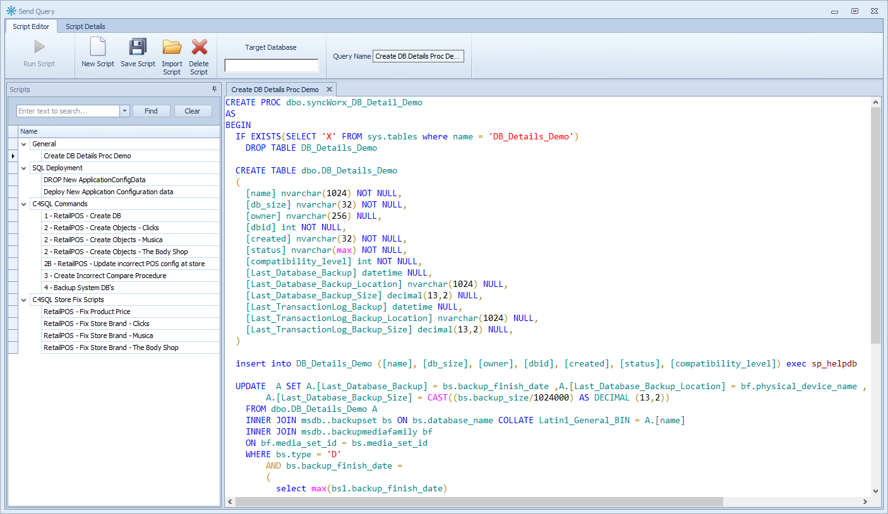

User Command Script Editor
The Conductor4SQL script editor is a rich SQL script editor with syntax highlighting and allows you organize and send your SQL Scripts.
The User Command Script Editor is used for creating and editing DDL SQL Scripts before sending them to clients.
The script editor has the following components:

- Saved user commands - list of all previously saved user commands
- Use Database - The database to execute the script against
Note
You can use SQL wildcards to execute the script on multiple databases at once.
- Command - This text area is where you fill in the SQL Script you would like to send to the client
- Name - The name of the script you are sending (will be visible in the User Command Status tab so make it descriptive)
- Description - A descriptive name for the script
- Created By - The author of the script
- Security - the security level to apply
Note
Possible security options are:
- None - No security (anyone can view and edit the script)
- Not editable by other users - Script can be run and viewed but not edited by all user-command-script-editor
- Not viewable by other users - Script is only available for the owner.
- Category - Categorize your script to simplify finding your scripts
The grid to the left allows for easily retrieving and finding previously saved scripts
There are also the following menu options: File > New User Command - create a new script File > Import SQL File - Fill the script editor text with the text of the external SQL file File > Delete User Command - Delete the current script File > Save User Command - Save the current script for later use * Templates - Pre-saved scripts which are ready to use.
Tip
It is advisable that you test all SQL statements in the SQL Server Management Studio before submitting them in Conductor4SQL.
User Query Script Editor
The User Query Script Editor is used for creating and editing Queries with an expected result set.
The User Query Script Editor works in the same way as the command editor except one additional option:
- Save Results To Table - Enter a table name to save the query results to.
Note
The results will be saved to table [SyncWorx].[C4SQLReporting].[#ChosenTableName#]
If you execute the query a second time the results will be appended to the previous results.